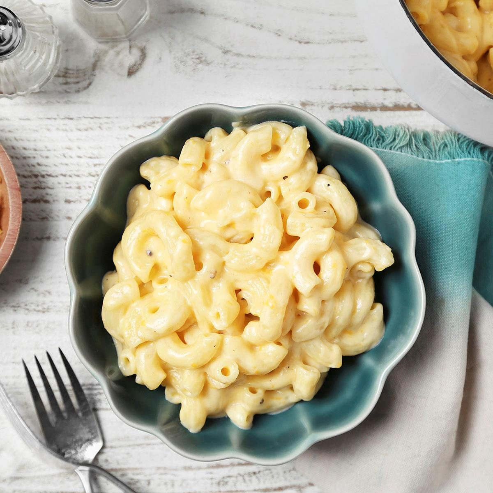

-Back to Home-
Mac And Cheese

DESCRIPTION
Craving mac and cheese? This is the ultimate comfort dish your taste buds have been waiting for. Creamy, dreamy, and loaded with rich, cheesy goodness, it's the perfect balance of indulgence and nostalgia.
With a golden, crispy topping and a velvety center that melts in your mouth, this mac and cheese isn't just food — it's a whole mood. One bite, and you'll know: this is the kind of dish that turns cravings into obsessions.
Ingredients:
- Macaroni: This classic mac and cheese recipe starts with a package of elbow macaroni.
- Butter: A stick of butter lends richness and flavor.
- Seasonings: Simply season the macaroni and cheese with salt and pepper.
- Cheese: You'll need shredded Cheddar cheese for this basic recipe.
- Milk products: The creamy cheese sauce calls for whole milk and evaporated milk.
- Eggs: Up the richness with two beaten eggs.
- Canned soup: A can of condensed Cheddar cheese soup is the budget-friendly secret ingredient.
- Paprika: Ground paprika is optional, but recommended for fans of flavor!
Steps:
- Step 1: Boil the pasta in salted water, then drain and transfer to the slow cooker.
- Step 2: Stir in the butter, seasonings, and about half of the Cheddar.
- Step 3: Whisk the evaporated milk and eggs together, then stir into the pasta.
- Step 4: Whisk the milk and the soup together, then stir into the pasta.
- Step 5: Sprinkle the remaining cheese over the pasta mixture and garnish with paprika.
- Step 6: Cook on Low for 2 ½ to 3 hours.